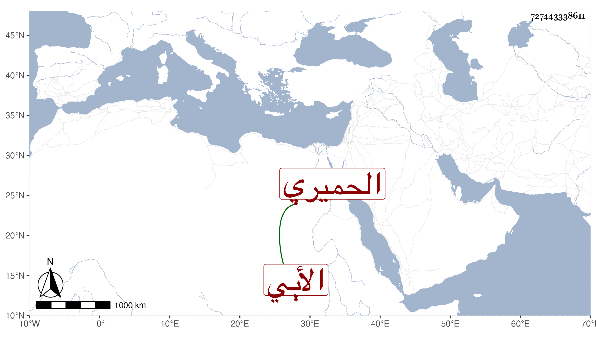

0902Sakhawi.DawLamic.ITO20230111-ara1.EIS1600.727443338611
Biography ID: 727443338611
300
عبد الرحمن بن عمر بن أبي بكر بن عبد الله الوجيه أبو زيد الترخمي الحميري الأبي ويعرف بابن القطان . ولد في سنة احدى وثمانمائة بأب ونشأ بها فحفظ القرآن وتعاني النظم وكتب عنه صاحبنا النجم بن فهد لغزا له في الشطرنج ومن نظمه أيضا :
| حلفت بها منكسة الرءوس | تبت دموعها ما في النفوس |
| تفل شبا الكتائب وادعات | وتسطم هامة الجيش الخميس |
في أبيات أثبتها في التاريخ الكبير .
